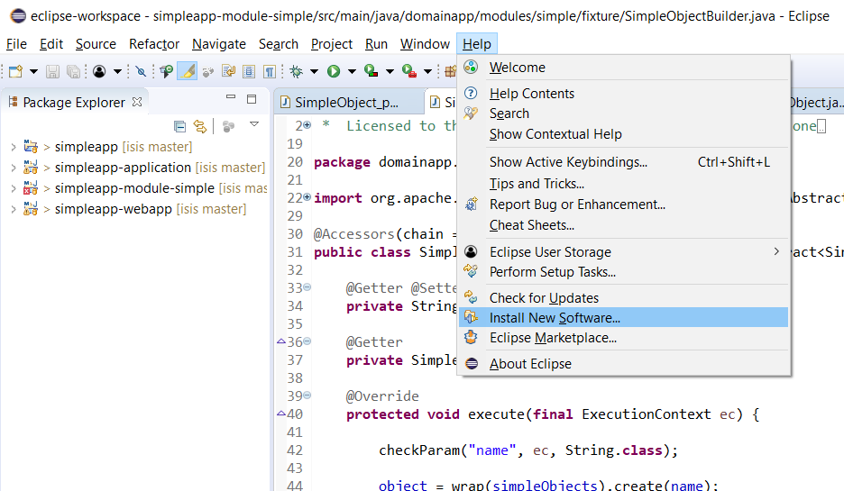

Using Eclipse
If you are an Eclipse user, then we recommend you download the "Spring Tools Suite" bundle.
Prerequisites
Install Project Lombok
The SimpleApp starter app uses Project Lombok annotations (@Getter and @Setter and so on) to reduce the boilerplate.
For Eclipse IDE this requires an installation step.
(JDO only) Install the DataNucleus plugin
If using JDO persistence (rather than JPA), then it’s necessary to setup the development environment so that the Java bytecode can be enhanced by the DataNucleus enhancer.
If using Eclipse, then JDO enhancement is most easily done by installing the DataNucleus' Eclipse plugin. This hooks the bytecode enhancement of your domain objects into Eclipse’s normal incremental compilation.
This plugin needs to be configured for each of your domain modules (usually just one in any given app).
The DataNucleus plugin hooks into the Eclipse compiler and will automatically enhance the compiled class files:
-
Use Help > Install New Software:
 -
Specify the DataNucleus plugin repository:

-
Select the plugin

-
Press Next and Finish to complete the installation of the plugin
Then restart Eclipse
Importing the Project
Use File > Import, then Maven > Existing Maven Projects.

| at this point the IDE hung, apparently hitting a deadlock (as of 2023). I had to kill the IDE and restart, reimporting the already cloned repo. |
Importing:
JDO
This section applies if you are using JDO (rather than JPA) as the ORM of your application.
Configure DataNucleus Enhancer
|
Make sure you are in the 'Java' Perspective, not the 'Java EE' Perspective. |
In Eclipse, for the domain object model project(s), first add DataNucleus support:

Then turn on Auto-Enhancement:

Update the classpath
DataNucleus' enhancer uses the domain object model’s own classpath to reference DataNucleus JARs. So, even though your domain objects are unlikely to depend on DataNucleus, these references must still be present.
If you’ve based your app on either the HelloWorld or the SimpleApp starter app, then it’ll be set up already.
Then, tell DataNucleus to use the project classpath:

When the enhancer runs, it will print out to the console:

| If you hit issues with path limits, then see the section below. |
Running the App
Create a launch configuration that runs the main class annotated with @SpringBootApplication.
-
create a Spring Boot configuration:
-
specify the module and main class
If running JPA, then you should enable weaving:
-
change
eclipselink.weavingproperty totrueinapplication.ymlfile: -
in the run configuration, specify the
javaagent:JVM argument:
You should then be able to run the app:
-
console:
-
boot dashboard:
The app should be accessible at http://localhost:8080
JDO : Workaround for path limits (the DN plugin to use the persistence.xml)
If running on Windows then the DataNucleus plugin is very likely to hit the Windows path limit.
To fix this, we configure the enhancer to read from the persistence.xml file.
As a prerequisite, first make sure that your domain object model has a persistence.xml file.
Then specify the persistence-unit in the project properties:

Workaround: If the enhancer fails
On occasion it appears that Eclipse can attempt to run two instances of the DataNucleus enhancer.
This is probably due to multiple Eclipse builders being defined; we’ve noticed multiple entries in the Eclipse’s Debug view:

At any rate, you’ll know you’ve encountered this error if you see the following in the console:

The best solution is to remove DataNucleus support and then to re-add it:

If you consistently hit problems, then the final recourse is to disable the automatic enhancement and to remember to manually enhance your domain object model before each run.